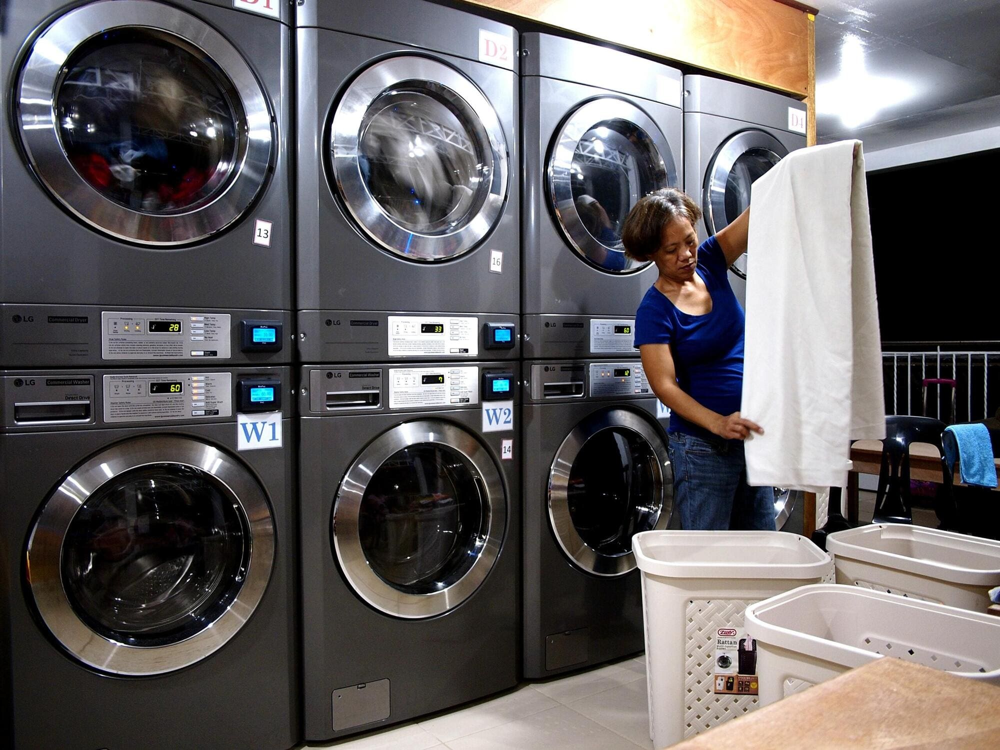

A laundry shop is a business that provides
washing, drying and folding services for customers.
It helps people save time and keep their clothes
clean and fresh at the same time.
Customers can use self-service washing machines.
This can help people who don't have washing machines at home.
The express wash saved me so much time! My clothes came back smelling so fresh and perfectly folded. Outstanding service every single week.- Azeem Syahmi

For more information, please visit our Headquarters
Business Address
11, Jalan SG 1/3,
Taman Sri Gombak,
68100 Batu Caves,
Selangor, Malaysia.
Contact us at dobiqueen@gmail.com for more information.